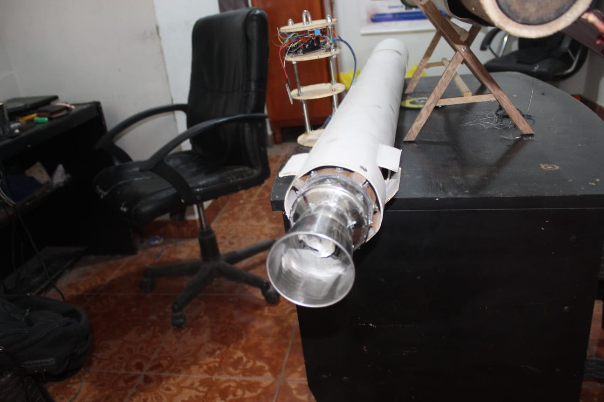
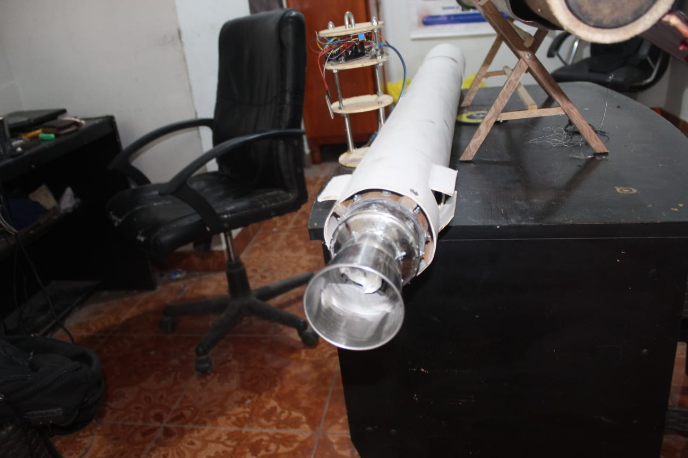
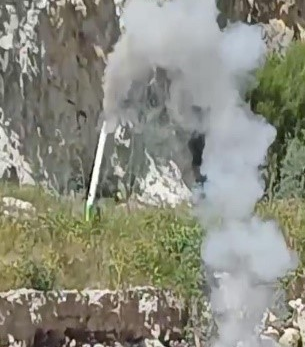
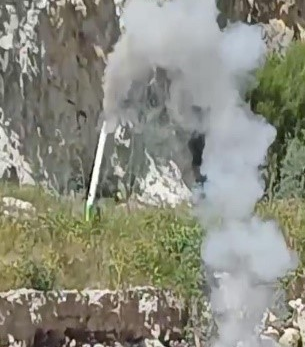

PROPULSIÓN JICAAT
El sistema de propulsión del cohete JICAAT corresponde a un motor de combustible sólido experimental, desarrollado como parte del programa nacional de investigación aeroespacial impulsado por Villa Automation S.A.C.
Este sistema constituye el núcleo energético del vehículo lanzador, siendo responsable de transformar la energía térmica generada en la cámara de combustión en empuje mediante la expansión controlada de gases compresibles a través de una tobera convergente–divergente.
El diseño y análisis del motor se fundamentan en el modelado del flujo de gases mediante las ecuaciones de Navier–Stokes compresibles promediadas por Favre, permitiendo estudiar fenómenos reales como turbulencia, variaciones de densidad, ondas de choque y pérdidas viscosas.
Objetivos del Sistema de Propulsión
🔥 Rendimiento
- Optimizar el empuje efectivo del motor
- Maximizar el impulso específico
- Mejorar la eficiencia de la tobera
🧮 Modelado CFD
- Simulación del flujo compresible
- Evaluación de presión y Mach
- Análisis de ondas de choque
🧪 Validación
- Pruebas experimentales de encendido
- Medición de presión y temperatura
- Comparación CFD–experimental
⚙️ Configuración
- Propulsión sólida experimental
- Empuje nominal: ~400 N
- Tobera convergente–divergente
📐 Fundamento Teórico
El flujo interno del motor se modela mediante formulaciones RANS–Favre, adecuadas para flujos turbulentos de densidad variable, permitiendo estimar empuje real integrando esfuerzos de presión y cortante en la salida de la tobera.
 


 
